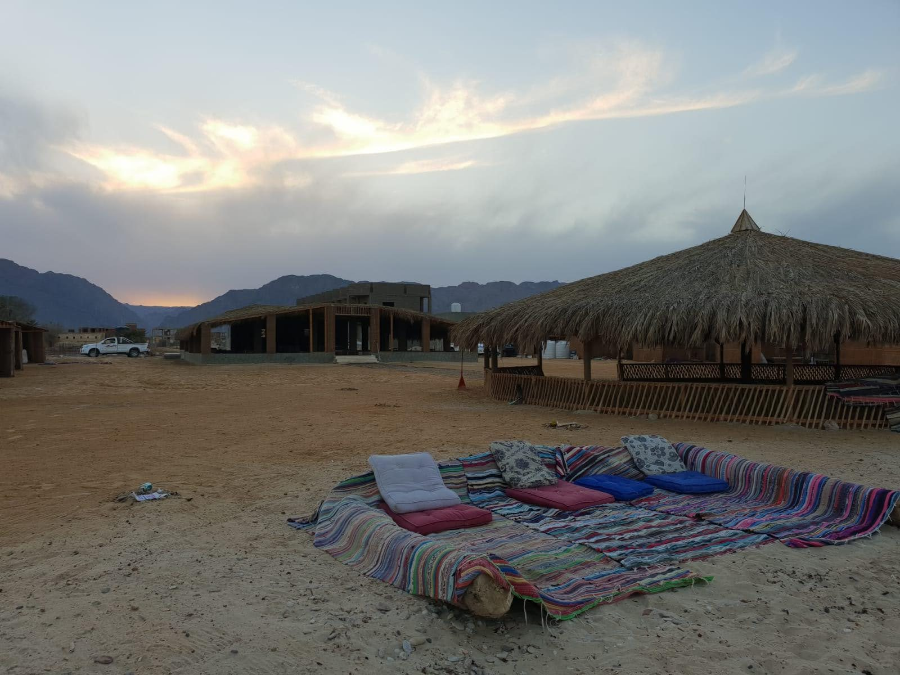
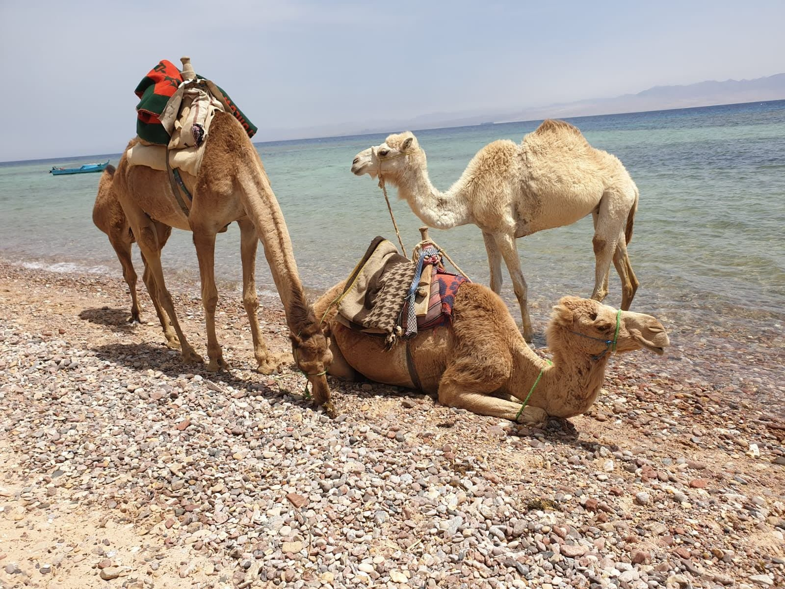
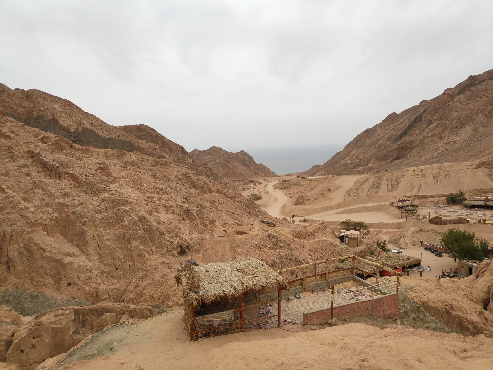
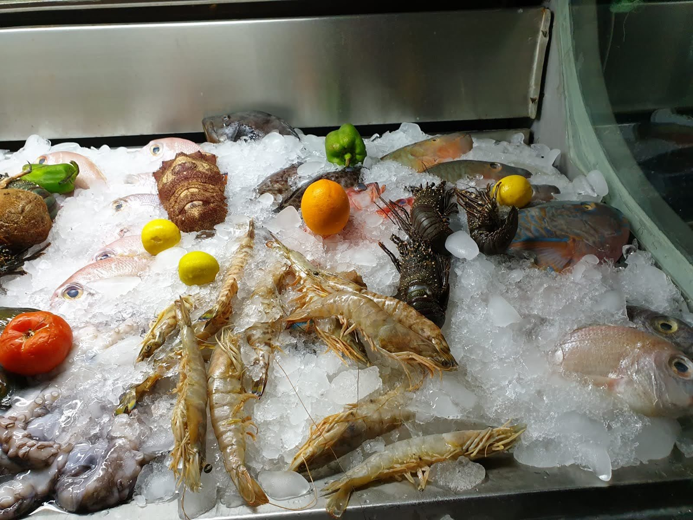
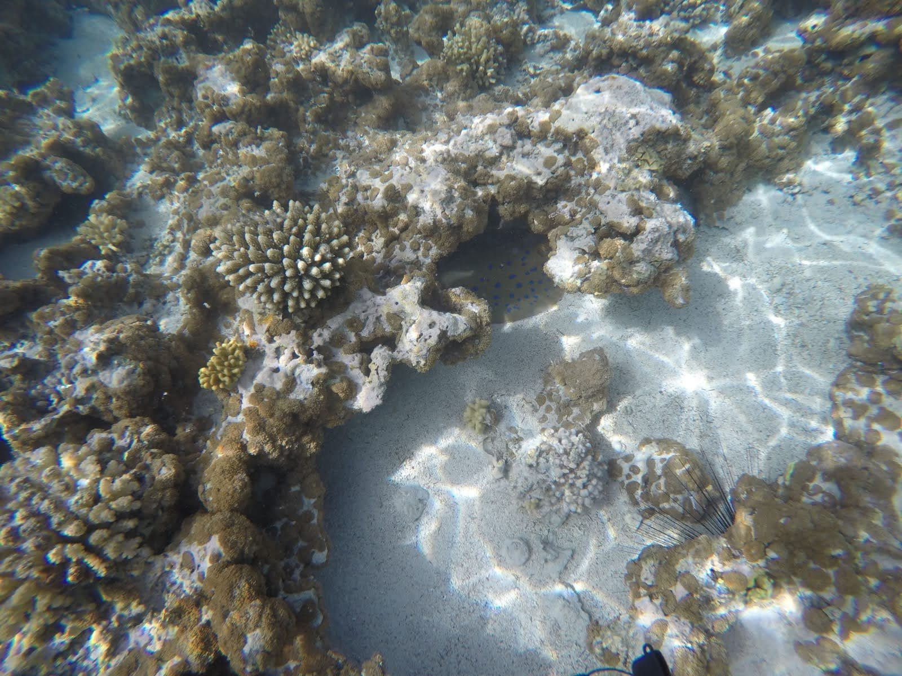
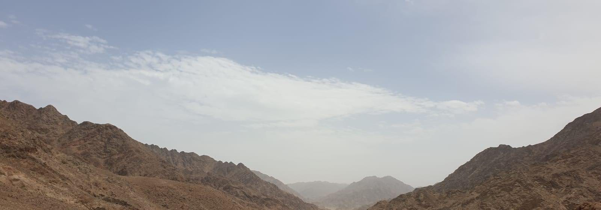

Middle East · Egypt · Dahab
Dahab and the Sinai coast, April 2019
In April 2019 I went from Eilat to the Sinai coast of Egypt with friends. I crossed the border at Taba on foot, took a paid transfer south, slept in a hut camp on the beach in Nuweiba, and spent the last part of the trip in Dahab, in a modest hotel. My photos end on the night of April 15.
My conclusion up front: this is a short, loose trip, and I have fewer exact facts about it than about my South America chapters. Some of my photos come from my friends' phones through WhatsApp, and WhatsApp does not keep the date a photo was taken, so I can place only my own Google Photos on a day. I say so under each photo I cannot place.
The times are my phone's clock, shown by Google Photos in GMT+02:00. The places are Google Photos' pins, and I say where a pin is an estimate. The boxes hold research I did in November 2026, each with a source and a date, so you can tell it apart from what I remember.
- The security warning comes first. Reports from September 2026 say Israel's National Security Council keeps Egypt, including the Sinai Peninsula, at Level 4, with a recommendation not to travel there. Check the current wording before you plan anything.
- The Taba crossing: in March 2026 the US Embassy in Cairo said it was open 24 hours a day, and the fee on the Egyptian side had reached 120 US dollars per person, up from 60 the week before. I did not find a figure for November 2026.
- The fee on the Israeli side: I did not find a current figure. A Wikipedia entry listed 109 shekels in June 2023.
- Taba to Dahab: about 140 km and about two hours by road. Online travel sites give very different prices, from a few dollars by bus to about 45 dollars for a private taxi, and none of them is a current quote.
The sources are in the boxes below the story. These things change, so check before you go.
April 12: across the border at Taba
I left from Eilat on Friday, April 12, 2019, and crossed the border at Taba on foot. Google Photos pins my first photo on the Egyptian side at 17:57, at a place it calls Taba Gateway. I do not remember the time I left Eilat, how long the crossing took, or what I paid at the border, on either side.
After the crossing I took a paid transfer south. I do not remember the price, who arranged it or what kind of vehicle it was. At 19:21 Google Photos pins a photo at Fjord Bay, in Taba, and that is the last place I can confirm that day. I do not know where I slept on the night of April 12, and I would rather leave it empty than guess.
April 13: Nuweiba
On Saturday, April 13, I was in Nuweiba. At 18:47 I took a photo on a pebble beach that Google Photos places in Nuweiba, as an estimate, not an exact pin. I slept in a hut camp on the beach. I do not remember its name or what I paid.


The photo above is one of those I cannot place. I know it is from this trip, because it reached me with the others, but not which day or which beach.
April 14: Dahab at night
By the night of Sunday, April 14, I was in Dahab. Google Photos pins one night photo at a place called Al Capone, in Dahab. I do not know how I got from Nuweiba to Dahab, or what time I arrived. This is the only thing I can confirm about that night.
April 15: Dahab by day
Monday, April 15, is the day I have the most photos for. Google Photos has about 17 of my own photos from it, all pinned in Dahab: a valley with a hut, quad bikes on the beach, abandoned buildings, café selfies, a husky puppy and a selfie in a car at 18:53. I do not remember which of these I did first, who I rented from, or what any of it cost.

The puppy above is from a photo that reached me through WhatsApp, in a shop with red walls. Google Photos has similar photos of mine of a husky puppy at the same kind of red wall, pinned in Dahab on April 15. So I think this was that day, but I cannot confirm it from this file.
My last photo from the trip that I can place is a selfie at 22:46 that I think was taken back in Eilat. I did not confirm the place, so I am not sure. I have no photos from April 16.
Photos I cannot place
Three more photos reached me without a date: a display of fresh seafood on ice at a restaurant, an underwater shot of a reef, and a valley with a dirt road. I do not know the restaurant, the reef or the valley, or the days.



What I found: an Israel Hayom article of September 6, 2026 about the National Security Council's assessment before the High Holidays says that Jordan, Qatar, Somaliland and Egypt, including the Sinai Peninsula, are under Level 4 travel warnings (Israel Hayom, September 6, 2026). An i24NEWS report says the council urged travelers to avoid these countries entirely (i24NEWS). The US State Department's level for Egypt was reported in April 2026 as Level 2, with Do Not Travel for North and Middle Sinai (KTVU, April 2026).
What I did not find: the current wording of the Israeli warning itself, and whether it has changed since September. Read it on the National Security Council's own site on the day you decide, and not in my summary. I did this trip in 2019, under different conditions, and I am not telling you it is safe or unsafe today.
What I found: a US Embassy in Cairo alert of March 29, 2026 said the land crossing at Taba was operating and scheduled to stay open 24 hours a day (OSAC, March 29, 2026). The New Arab reported on March 30, 2026 that the fee for individuals had reached 120 dollars, from 60 the week before (The New Arab, March 30, 2026). An AOL article quoted the embassy as saying the 120 dollars are paid in cash (AOL). Wikipedia says the fee is waived if you go no further than 1 km from the border, and lists a fee of 109 shekels on the Israeli side in June 2023 (Wikipedia).
What I did not find: the fee on either side in November 2026, which entry rules apply to an Israeli passport today, and what I paid in 2019. The March 2026 figures came during a war and may have changed since. Carry cash and ask at the crossing.
What I found: Rome2Rio gives the road distance as about 140 km, about two hours by car, and about 3 hours 47 minutes by bus at an estimated 5 to 8 dollars (Rome2Rio). A booking site lists a private transfer at about 45 dollars and a minivan seat at about 13 dollars (12Go).
What I did not find: a current quote or a timetable, and what I paid in 2019 for my own transfer. These are estimates from booking sites, and the prices differ a lot from one to the other. Ask the driver for the price before you get in.
What I think now
The coast between Taba and Dahab is a place of turquoise water, rocky mountains and long beaches with simple huts, and it is easy to see why people went there for a few days. But it is also the part of this site where the first thing to check is not a price or a bus. It is the warning. Start there, then the crossing, then the rest.
What I do not remember
I do not remember where I slept on the night of April 12, how much the transfer cost, the name of the hut camp in Nuweiba or what I paid, how I got from Nuweiba to Dahab, the name of the hotel in Dahab or its price, which restaurant had the seafood, where I saw the camels and the reef, what I did on April 13 during the day, what the place called Al Capone is, or where I took the 22:46 selfie. I would rather leave these empty than make them up.